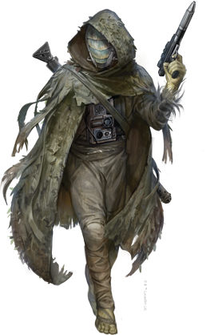

Melitto
melitto
Special Abilities: Melittos begin the game with one rank in Perception. They still may not train Perception above rank 2 during character creation.
Sightless Vision: Melittos can perceive their surroundings without needing light, and they never suffer penalties on combat or Perception checks due to darkness or other environmental factors that affect vision.
Reliant on Toxins: Melittos require the toxins of their native atmosphere to live; offworld, they gain free special respirators to emulate the conditions of their homeworld. They treat standard planetary air composition as a corrosive atmosphere with rating 6.
Melittos are insectile, chitin-plated bipeds who hail from the volcanic Inner Rim planet of Li-Toran. Lacking eyes, they rely on auditory organs and feathery cilia to sense their surroundings. The cilia cover their bodies, allowing them to detect vibrations, scents, and even electrical fields. Through powerful scent-memories, Melittos can identify and track specific targets and penetrate clever disguises. They can even sense the chemical compounds that identify diseases, making them gifted natural physicians. Many Melittos use their abilities to become renowned bounty hunters or trackers.
Nearly all Melittos live in densely packed underground hives, although a few exist outside of hive society. Most of the latter, known as ronin, leave their homeworld to travel the galaxy. Some of them find new purpose in contributing to the Alliance via their rare abilities.
Melittos are cold-blooded, preferring hot climates whenever possible. Newborns lack the species’ distinctive chitin scales, which grow as they mature, making it possible to judge age by the number, size, and condition of the plates. Melittos’ cilia also grow with age, beginning as brightly hued strands and becoming less colorful over the years. Chitin and cilia coloration indicates a Melitto’s hive of origin, though the sightless Melittos rely on individual scent-memories for this information.
Melittos can only digest sugary liquids. Their diet consists primarily of the crimson sap from a native coral-like organism known as bleeding rock, which grows in the thick steam within Li-Toran’s underground tunnels. The air in the tunnels contains much higher densities of toxic compounds than the world’s already dangerous surface atmosphere. As the Melittos evolved in this harsh environment, their very survival depends on these toxins. When offworld, they must wear a special survival device that lets them breathe the same compounds; the device also distills local foodstuffs into sweet-smelling liquids that simulate bleeding-rock sap.
Melittos live in caste-based hives, each controlled by a single queen, who is supported by younger females known as myrmitrices. Queens and myrmitrices emit special pheromones that control the males, who are called myrmites. The myrmites make up the majority of the population and perform almost all hive activities, including combat, maintenance, and, most importantly, agriculture.
Hive society is built around tending bleeding-rock coral farms and harvesting the highly nutritious red sap the coral produces. This is a difficult process, and poor harvests can rapidly lead to population pressures. Thus, when a hive becomes too large to operate given its food supply, groups of myrmitrices and their myrmite followers soon leave, either voluntarily or forcibly. The exiles create a new hive in another underground region, and soon the myrmitrices vie to become its new queen in a deadly struggle. The victorious myrmitrix and her myrmites take control of the new hive. Surviving myrmites belonging to defeated myrmitrices become hiveless ronin, most of whom leave Li-Toran for new lives. Some seek out organizations on other worlds to act as surrogate hives for them, while others strike out on their own and become independent agents.
Li-Toran is a harsh world of violent storms. The intense volcanic activity creates dark, noxious clouds that let almost no light pierce through to the ground. These factors have made the planet extremely hot and unpleasant to outsiders. Rivers of molten rock carve complex networks of constantly shifting tunnels through the crust, where most of the native flora and fauna evolved. Many of the tunnels expand into huge caverns, some kilometers in size, where Melittos make their hives.
On the surface, the Empire has a garrison named Dometown to monitor the population. The posting has become somewhat of a punishment detail due to the dangerous conditions; stormtroopers here sometimes refer to it as Doomtown. Traveling elsewhere on the planet (or rather, below its surface) demands heavy environmental suits for even short durations.
Melittos communicate primarily through pheromones; even their written language is composed of scents rather than letters. This makes it hard for outsiders to communicate with them. To mitigate this issue, the Melittos’ survival device includes a vocoder to translate their pheromones into Basic and others’ Basic into their scent-language.
The major hives of Li-Toran are highly isolationist; citizens care little for the barely comprehensible politics of the Empire or Alliance. Li-Toran itself has few valuable resources of interest to the Empire. However, the Empire conscripts ronin from across the galaxy into forced labor in harsh environments and toxic factories where the conditions would be fatal to others. Such practices have led to a growing hatred for the Empire among the ronin.
Melitto ronin have much to offer the Alliance: their combat skills make them excellent Soldiers, and their unique senses make them particularly well-suited for the Spy career. Their innate medical skills facilitate work as field Medics as well. Though many ronin find themselves confused by the social interactions of other species, the tactical abilities many develop in hive warfare can also make them skilled Commanders.
Rumors tell of a hidden organization known as Hive Ronin operating on Li-Toran, one that doesn’t have the typical hive structure and is filled only with ronin. Legends say its members have formed mercenary groups, smuggling rings, and even guilds of assassins.
The infamous and amoral Melitto bounty hunter Sarco Plank is thought to have been part of this group. Known as the Scavenger, he has spent many years tracking down priceless relics for buyers, leaving a trail of death and destruction in his wake. Plank operated across the Outer Rim for years, until a fateful encounter with a young X-wing pilot at a Jedi Temple on Devaron. There has been no word of Plank’s actions since, something that many find even more worrisome.
Long before the fall of the Republic, there was a time in Melitto history known as the Unending Conflict. Overdevelopment had left few viable locations for new hives, causing myrmitrices to compete for the same caverns. Worse, before any conflict could end, new myrmitrices with fresh soldier-myrmites would join the battle and continue the violence. For centuries, this escalated until the level of underground warfare caused whole tunnel and cavern networks to collapse. To prevent all-out catastrophe, the largest hives formed a planetary council to end the existing battles and work to ensure such wars were not repeated. One part of its solution was to begin colonization efforts, sending myrmitrices and their myrmites to neighboring systems.